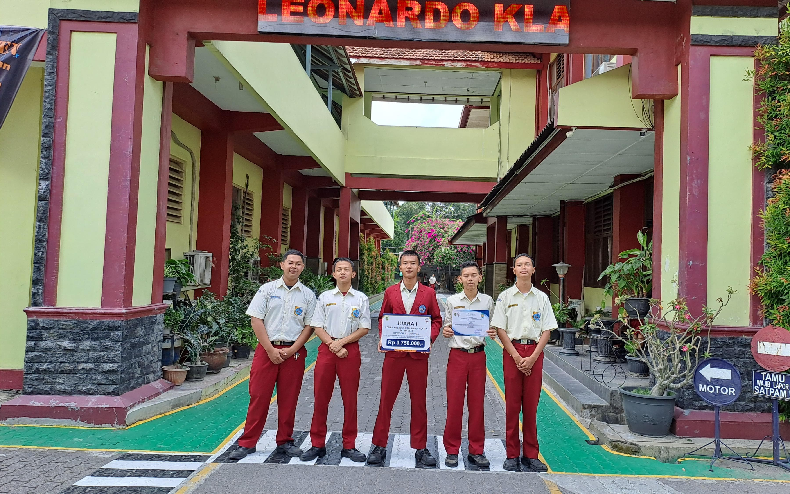
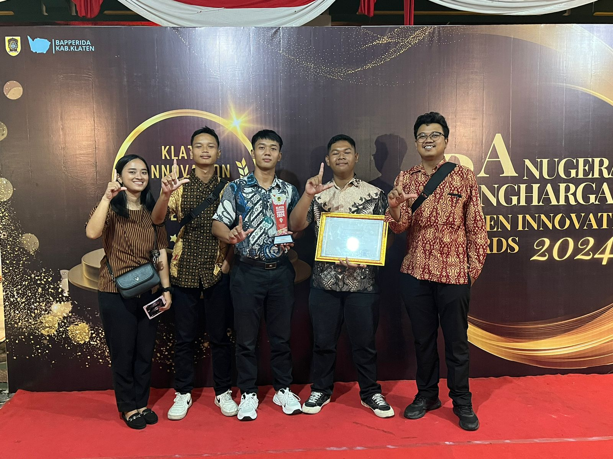
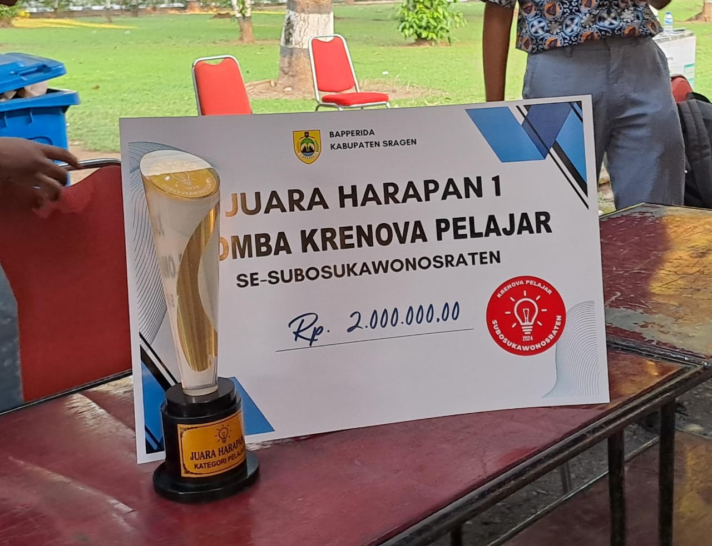
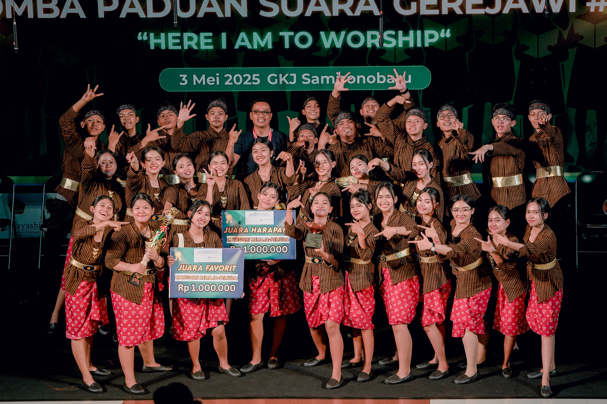

Saya adalah seorang pelajar SMK Leonardo Klaten yang aktif dan berprestasi dalam bidang inovasi teknologi. Saya telah meraih Juara 1 dalam Lomba Krenova Pelajar Kabupaten Klaten serta menerima Innovation Award 2024 dalam ajang Klaten Innovation Awards yang diselenggarakan oleh Bapperida Kabupaten Klaten. Fokus saya berada di dunia IT dan pemrograman, khususnya dalam pengembangan aplikasi menggunakan Dart (Flutter), HTML, dan bahasa pemrograman lainnya. Saya tertarik menggabungkan inovasi teknologi dengan solusi nyata yang berdampak bagi masyarakat. Prestasi ini menjadi motivasi besar bagi saya untuk terus belajar, berkembang, dan menciptakan karya-karya yang bermanfaat.

Luar biasa! Tim kami berhasil meraih Juara 1 dalam Lomba Krenova Pelajar Tingkat Kabupaten Klaten dan membawa pulang hadiah sebesar Rp 3.750.000. Penghargaan ini menjadi bukti nyata bahwa semangat inovasi dan kerja keras kami membuahkan hasil!

Bangga! Tim kami menerima Innovation Award 2024 dalam ajang Klaten Innovation Awards yang diselenggarakan oleh Bapperida Kabupaten Klaten. Penghargaan ini menjadi bukti semangat kami dalam berinovasi dan terus berkembang ke arah yang lebih baik!
+*-
Kami meraih Juara Harapan 1 dalam Lomba Krenova Pelajar Se-Subosukawonosraten yang diselenggarakan oleh Bapperida Kabupaten Sragen. Karya inovatif kami berhasil meraih penghargaan dan hadiah sebesar Rp 2.000.000. Terima kasih atas dukungan semua pihak. Prestasi ini jadi semangat kami untuk terus berinovasi!

Pada tanggal 3 Mei 2025 di GKJ Sambonobaru, aku bersama tim berhasil meraih Juara Harapan dan Juara Favorit dalam Lomba Paduan Suara Gerejawi #1 dengan tema "Here I Am to Worship". Dengan mengenakan kostum adat yang khas dan semangat kebersamaan, kami tampil membawakan pujian terbaik untuk memuliakan nama Tuhan.
 Whatsapp
Whatsapp